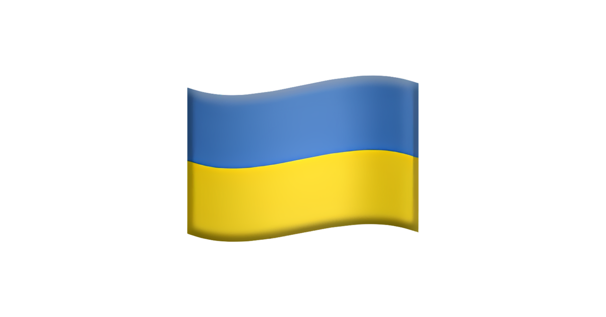
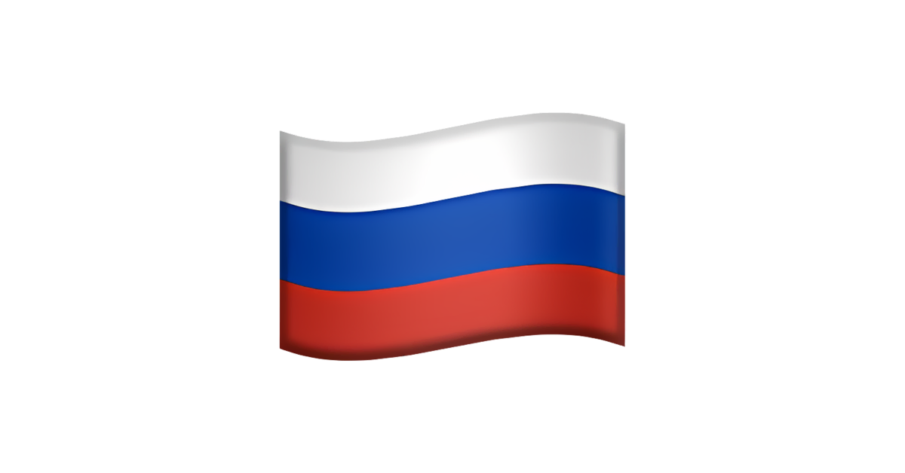
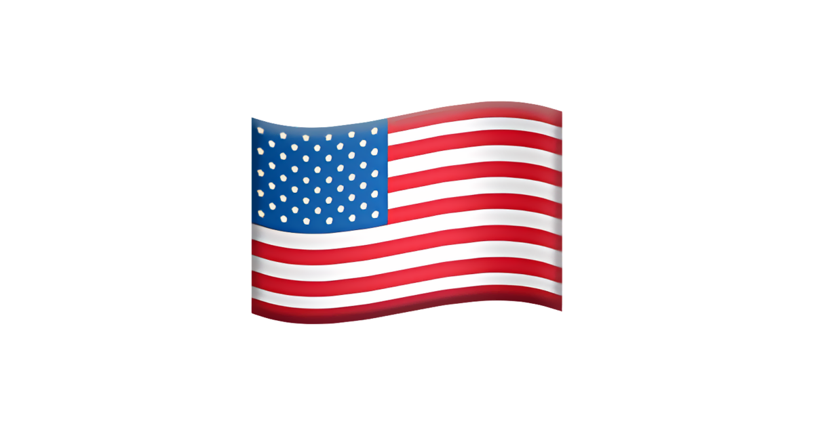

Відносини
Міжнаро́дні відно́сини Японії (яп. 日本の国際関係, にっぽんのがいこう) - сукупність усіх параметрів зовнішньої політики країни.
Основні напрямки
Висхідною точкою японської дипломатії новітнього часу є 28 квітня 1952 року. В цей день ООН ратифікувала Сан-Франциський мирний договір, за яким Японія відновлювала свою незалежність і ставала повноправним членом міжнародного співтовариства після поразки у Другій світовій війні. Паралельно з цим японський уряд уклав із США двосторонній договір про безпеку, що включив Японію в сферу американських політичних і військових інтересів. Окупаційні бази американських збройних сил, розташовані в Японії після 1945 року, були перетворені на союзницькі бази. Країна опинилася в таборі західних капіталістичних сил, що протистояли соціалістичному табору на чолі з СРСР в ході Холодної війни. Хоча зміст японсько-американських відносин мінявся з часом, японська зовнішня політика була постійно залежною від дипломатії США. Ця залежність зберігається по-сьогодні, на початку 21 століття. Японсько-американські відносини залишаються наріжними у японській системі повоєнних міжнародних відносин. Японський уряд намагається послаблювати свою залежність від США, дотримуючись курсу «рівновіддаленої» або «всесторонньої» дипломатії у відносинах з іншими країнами. Після вступу до ООН 1956 року, Японія проводить активно співпрацює з членами організації. Хоча країна є другою після США за розмірами внесків в бюджет ООН, її політичний вплив у світі незначний. Через це Японія має за мету стати постійним членом Ради Безпеки ООН.
| країна | відносини | посольство |
| Україна  | відносяться нейтрально | немає |
| Росія | відносяться позитивно | розміщене в Токіо |
| США | відносяться негативно | розміщене в Токіо |